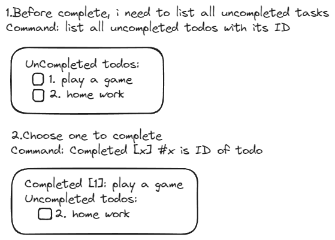
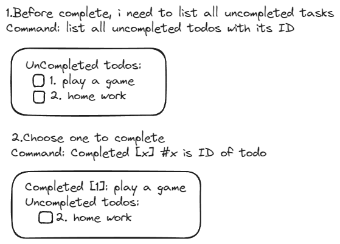
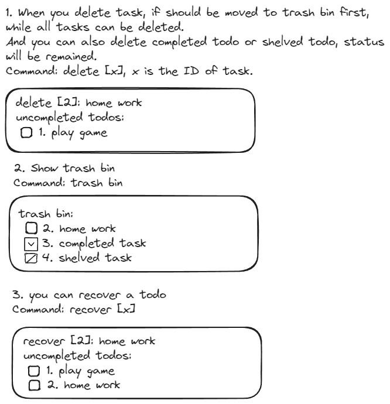
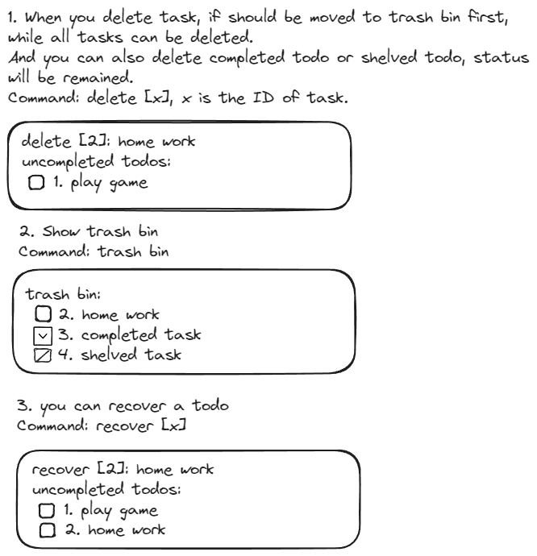
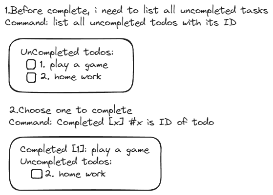
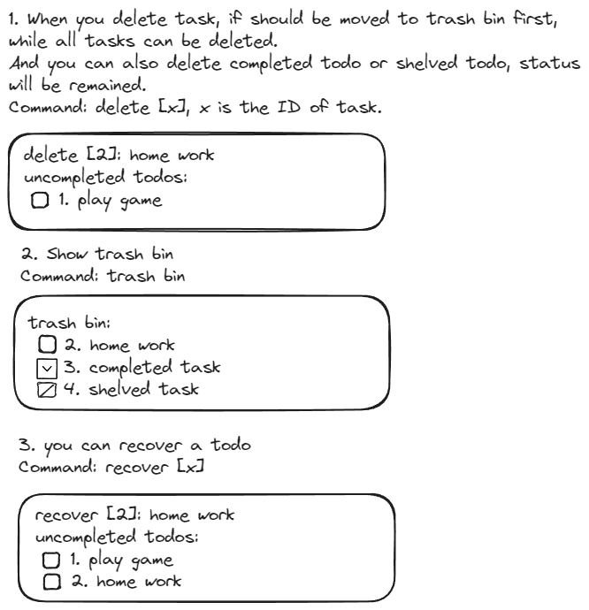

 
add <todo-name>
fail: <why>
complete <todo-id>
fail: <why>
delete <todo-id>
fail: <why>
shelve <todo-id>
fail: <why>
remove <todo-id>
fail: <why>
graph LR
CLI[命令行接口层
功能：解析用户输入
文件：main.rs]
API[程序接口层
功能：处理命令
文件：api.rs]
BL[业务逻辑层
功能：管理任务
文件：logic.rs]
DS[数据存储层
功能：读写数据
文件：storage.rs]
DM[数据模型层
功能：定义数据结构
文件：model.rs]
CLI -->|main.rs调用| API
API -->|api.rs调用| BL
BL -->|logic.rs调用| DS
DS -->|storage.rs调用| DM
提供对用户的操作指令，调用下层接口 帮助文档
rtd -h
rtd --help
添加一个todo
rtd -a <item-name>
rtd --add <item-name>
列出所有未完成的todo
rtd -l
rtd --list
rtd -l uncompleted
rtd --list uncompleted
完成一个todo
rtd -c <item-id>
rtd --complete <item-id>
列出所有完成的todo
rtd -l completed
rtd --list completed
标记一个todo为未完成
rtd -u <item-id>
rtd --uncomplete <item-id>
搁置一个todo
rtd -s <item-id>
rtd --shelve <item-id>
列出所有搁置的todo
rtd -l shelved
rtd --list shelved
删除一个todo
rtd -d <item-id>
rtd --delete <item-id>
列出所有已删除的todo
rtd -l deleted
rtd --list deleted
物理删除一个todo
rtd --destory <item-id>
把一个todo从回收站恢复
rtd -r <item-id>
rtd --restore <item-id>
清空回收站
rtd --destory-all
列出所有todo
rtd -l all
rtd --list all
把所有程序逻辑统一集中到这里，统一对外提供
使用以下形式定义接口
function_name(input) -> output
添加一个todo
add_item(item_name) -> result_message
列出所有未完成的todo
list_uncompleted_items() -> result_message
完成一个todo
complete_item(item_id) -> result_message
列出所有完成的todo
list_completed_items() -> result_message
标记一个todo为未完成
uncomplete_item(item_id) -> result_message
搁置一个todo
shelve_item(item_id) -> result_message
列出所有搁置的todo
list_shelved_items() -> result_message
删除一个todo
delete_item(item_id) -> result_message
列出所有已删除的todo
list_deleted_items() -> result_message
物理删除一个todo
destory_item(item_id) -> result_message
把一个todo从回收站恢复
restore_item(item_id) -> result_message
清空回收站
destory_all_items() -> result_message
列出所有todo
list_all_items() -> result_message
定义一个todo的属性和行为
item {
id: u32,
name: String,
status: ItemStatus,
create_time: DateTime,
complete_time: DateTime,
shelve_time: DateTime,
delete_time: DateTime,
new(id, name,status, create_time, complete_time, shelve_time, delete_time),
beautify(), // 格式化显示信息
to_string(), // 转换成字符串
from_string(), // 从字符串转换
to_json(), // 转换成json
from_json(), // 从json转换
}

